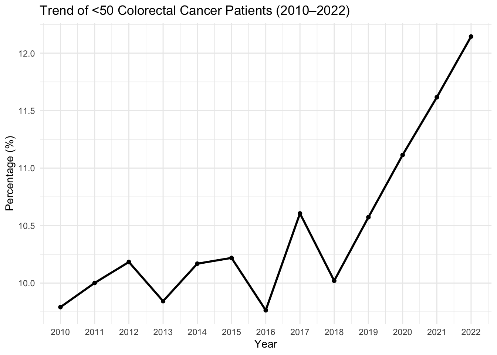
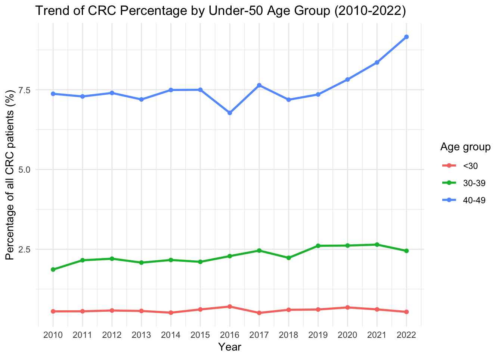
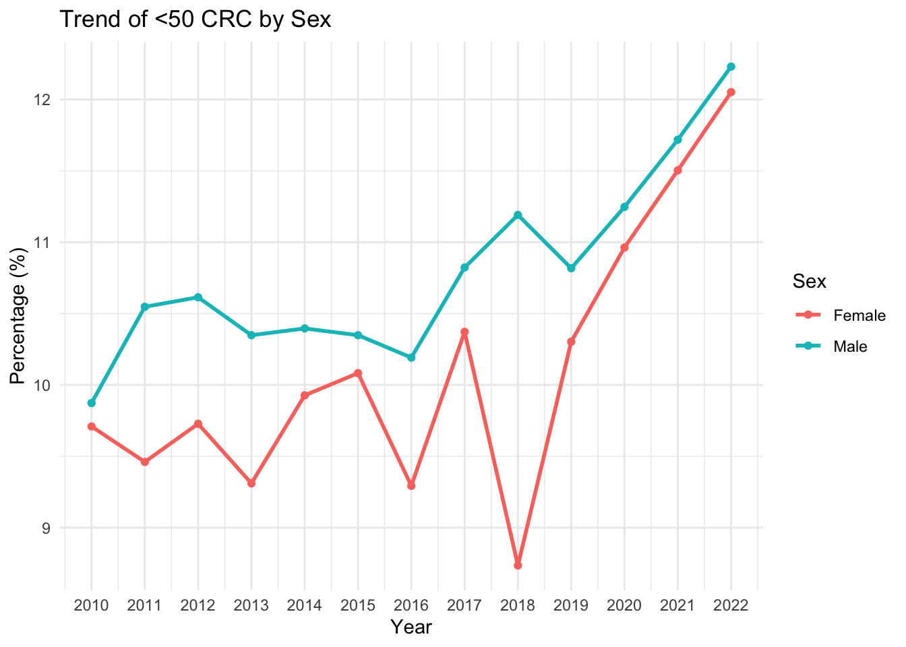
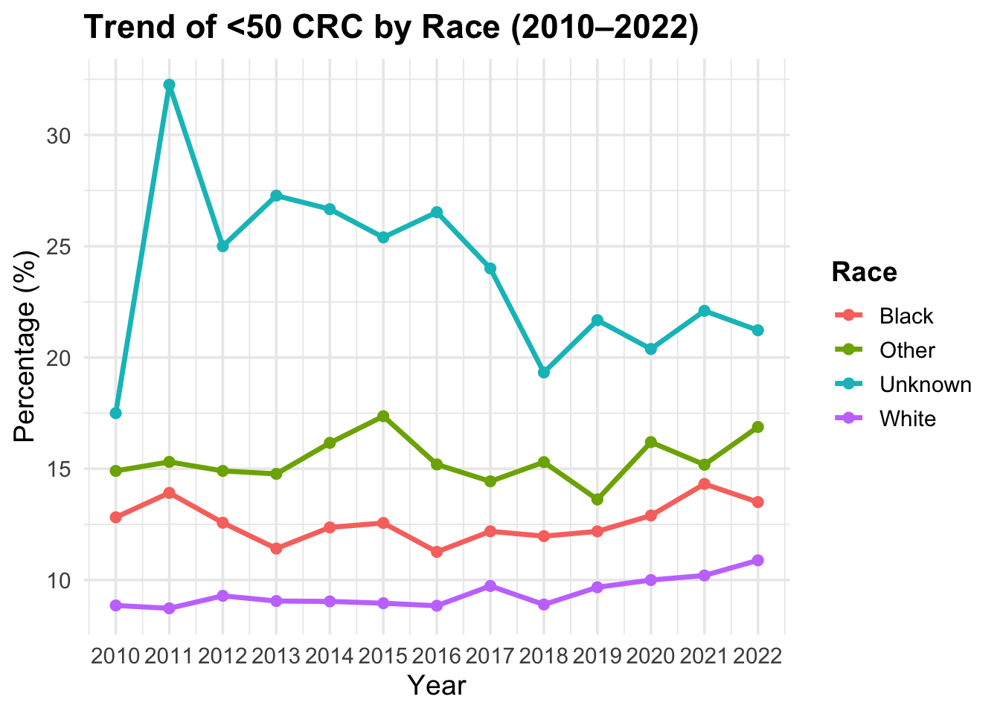
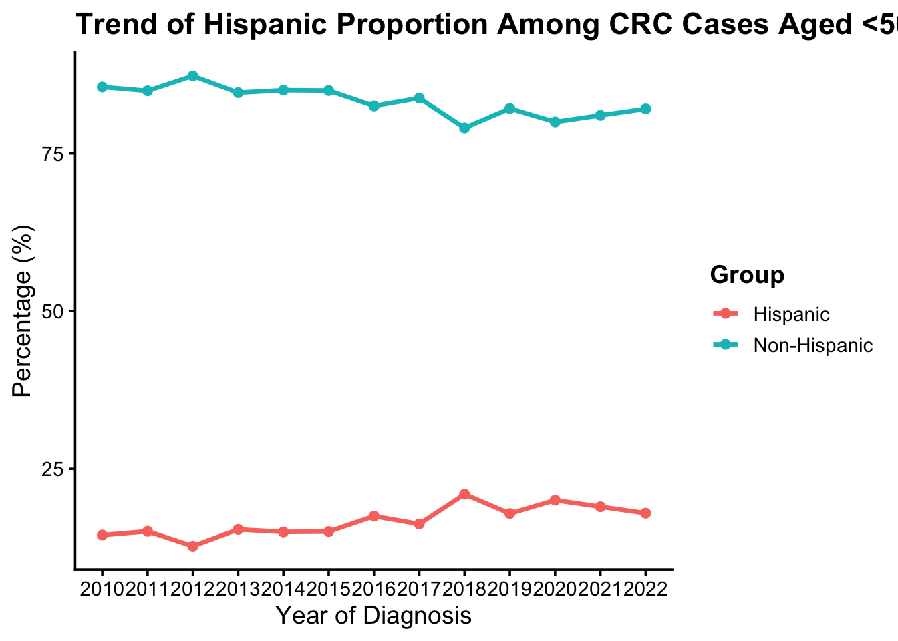

Code
library(dplyr)
library(readr)
#install.packages("janitor")
library(janitor)
library(ggplot2)library(dplyr)
library(readr)
#install.packages("janitor")
library(janitor)
library(ggplot2)data_cr_cancer <- read_csv(
"/Users/apple/Desktop/me/WCM/semester/research/qiu/smoke/cancer_main_with_RPL.csv",
show_col_types = FALSE
)
df <- read_csv("/Users/apple/Desktop/me/WCM/semester/research/qiu/smoke/cancer_main_with_RPL.csv")data_cr_cancer <- data_cr_cancer %>%
clean_names()
crc_sites <- c(
"Ascending Colon",
"Cecum",
"Descending Colon",
"Hepatic Flexure",
"Sigmoid Colon",
"Splenic Flexure",
"Transverse Colon",
"Large Intestine, NOS",
"Rectosigmoid Junction",
"Rectum"
)
crc_dat <- data_cr_cancer %>%
filter(site_recode_icd_o_3_who_2008 %in% crc_sites)crc_dat <- crc_dat %>%
filter(year_of_diagnosis >= 2010 & year_of_diagnosis <= 2022)
#summary(crc_dat)crc_dat <- crc_dat %>%
mutate(
age_under50 = case_when(
age_group_recode %in% c("<30", "30-39", "40-49") ~ 1,
age_group_recode %in% c("50-64", "65-79", "80+") ~ 0,
TRUE ~ NA_real_
)
)library(gtsummary)
table_overall <- crc_dat %>%
select(
age_recode_with_1_year_olds,
sex,
race_recode_white_black_other,
year_of_diagnosis,
origin_recode_nhia_hispanic_non_hisp,
rpl_themes
) %>%
tbl_summary(
statistic = list(
all_categorical() ~ "{n} ({p}%)",
rpl_themes ~ "{median} ({p25}, {p75})"
),
digits = rpl_themes ~ 3,
missing = "no",#ifany
label = list(
age_recode_with_1_year_olds ~ "Age",
sex ~ "Sex",
race_recode_white_black_other ~ "Race",
year_of_diagnosis ~ "Year of Diagnosis",
origin_recode_nhia_hispanic_non_hisp ~ "Hispanic Origin",
rpl_themes ~ "Overall Social Vulnerability (RPL_THEMES)"
)
) %>%
bold_labels() %>%
modify_caption(
"**Table 1. Descriptive raw data statistics with overall column distribution**"
)
table_overall| Characteristic | N = 112,4841 |
|---|---|
| Age | |
| 01-04 years | 2 (<0.1%) |
| 10-14 years | 7 (<0.1%) |
| 15-19 years | 45 (<0.1%) |
| 20-24 years | 162 (0.1%) |
| 25-29 years | 443 (0.4%) |
| 30-34 years | 883 (0.8%) |
| 35-39 years | 1,695 (1.5%) |
| 40-44 years | 2,985 (2.7%) |
| 45-49 years | 5,535 (4.9%) |
| 50-54 years | 10,280 (9.1%) |
| 55-59 years | 10,601 (9.4%) |
| 60-64 years | 12,769 (11%) |
| 65-69 years | 13,654 (12%) |
| 70-74 years | 13,708 (12%) |
| 75-79 years | 13,077 (12%) |
| 80-84 years | 11,930 (11%) |
| 85+ years | 14,708 (13%) |
| Sex | |
| Female | 54,452 (48%) |
| Male | 58,032 (52%) |
| Race | |
| Black | 18,091 (16%) |
| Other (American Indian/AK Native, Asian/Pacific Islander) | 7,490 (6.7%) |
| Unknown (including other unspec 1991+) | 1,355 (1.2%) |
| White | 85,548 (76%) |
| Year of Diagnosis | 2,016.0 (2,013.0, 2,019.0) |
| Hispanic Origin | |
| Non-Spanish-Hispanic-Latino | 100,175 (89%) |
| Spanish-Hispanic-Latino | 12,309 (11%) |
| Overall Social Vulnerability (RPL_THEMES) | 0.639 (0.328, 0.885) |
| 1 n (%); Median (Q1, Q3) | |
table_under50 <- crc_dat %>%
filter(age_under50 == 1) %>%
select(
age_recode_with_1_year_olds,
sex,
race_recode_white_black_other,
year_of_diagnosis,
origin_recode_nhia_hispanic_non_hisp,
rpl_themes
) %>%
tbl_summary(
statistic = list(
all_categorical() ~ "{n} ({p}%)",
rpl_themes ~ "{median} ({p25}, {p75})"
),
digits = rpl_themes ~ 3,
missing = "ifany",
label = list(
age_recode_with_1_year_olds ~ "Age",
sex ~ "Sex",
race_recode_white_black_other ~ "Race",
year_of_diagnosis ~ "Year of Diagnosis",
origin_recode_nhia_hispanic_non_hisp ~ "Hispanic Origin",
rpl_themes ~ "Overall Social Vulnerability (RPL_THEMES)"
)
) %>%
bold_labels() %>%
modify_caption(
"**Table 2. Descriptive raw data statistics among colorectal cancer cases aged <50 years**"
)
table_under50| Characteristic | N = 11,7571 |
|---|---|
| Age | |
| 01-04 years | 2 (<0.1%) |
| 10-14 years | 7 (<0.1%) |
| 15-19 years | 45 (0.4%) |
| 20-24 years | 162 (1.4%) |
| 25-29 years | 443 (3.8%) |
| 30-34 years | 883 (7.5%) |
| 35-39 years | 1,695 (14%) |
| 40-44 years | 2,985 (25%) |
| 45-49 years | 5,535 (47%) |
| Sex | |
| Female | 5,495 (47%) |
| Male | 6,262 (53%) |
| Race | |
| Black | 2,281 (19%) |
| Other (American Indian/AK Native, Asian/Pacific Islander) | 1,155 (9.8%) |
| Unknown (including other unspec 1991+) | 303 (2.6%) |
| White | 8,018 (68%) |
| Year of Diagnosis | 2,016.0 (2,013.0, 2,019.0) |
| Hispanic Origin | |
| Non-Spanish-Hispanic-Latino | 9,789 (83%) |
| Spanish-Hispanic-Latino | 1,968 (17%) |
| Overall Social Vulnerability (RPL_THEMES) | 0.672 (0.393, 0.902) |
| 1 n (%); Median (Q1, Q3) | |
trend_overall <- crc_dat %>%
group_by(year_of_diagnosis) %>%
summarise(
total_n = n(),
under50_n = sum(age_under50, na.rm = TRUE),
pct_under50 = under50_n / total_n * 100
)ggplot(trend_overall, aes(x = year_of_diagnosis, y = pct_under50)) +
geom_line(size = 1) +
geom_point() +
scale_x_continuous(breaks = 2010:2022) +
labs(
title = "Trend of <50 Colorectal Cancer Patients (2010–2022)",
x = "Year",
y = "Percentage (%)"
) +
theme_minimal()
trend_agegroup_pct <- crc_dat %>%
filter(age_group_recode %in% c("<30", "30-39", "40-49")) %>%
group_by(year_of_diagnosis, age_group_recode) %>%
summarise(
n = n(),
.groups = "drop"
) %>%
left_join(
crc_dat %>%
group_by(year_of_diagnosis) %>%
summarise(total_crc = n(), .groups = "drop"),
by = "year_of_diagnosis"
) %>%
mutate(
pct_of_all_crc = n / total_crc * 100
)
ggplot(trend_agegroup_pct, aes(x = year_of_diagnosis, y = pct_of_all_crc, color = age_group_recode)) +
geom_line(linewidth = 1) +
geom_point() +
scale_x_continuous(breaks = 2010:2022) +
labs(
title = "Trend of CRC Percentage by Under-50 Age Group (2010-2022)",
x = "Year",
y = "Percentage of all CRC patients (%)",
color = "Age group"
) +
theme_minimal()
trend_sex <- crc_dat %>%
group_by(year_of_diagnosis, sex) %>%
summarise(
total_n = sum(!is.na(age_under50)),
under50_n = sum(age_under50, na.rm = TRUE),
pct_under50 = under50_n / total_n * 100,
.groups = "drop"
)ggplot(trend_sex, aes(x = year_of_diagnosis, y = pct_under50, color = sex)) +
geom_line(size = 1) +
geom_point() +
scale_x_continuous(breaks = 2010:2022) +
labs(
title = "Trend of <50 CRC by Sex",
x = "Year",
y = "Percentage (%)",
color = "Sex"
) +
theme_minimal()
crc_dat <- crc_dat %>%
mutate(
race_simple = case_when(
race_recode_white_black_other == "Other (American Indian/AK Native, Asian/Pacific Islander)" ~ "Other",
race_recode_white_black_other == "Unknown (including other unspec 1991+)" ~ "Unknown",
TRUE ~ race_recode_white_black_other
)
)
trend_race <- crc_dat %>%
filter(!is.na(race_simple)) %>%
group_by(year_of_diagnosis, race_simple) %>%
summarise(
total_n = sum(!is.na(age_under50)),
under50_n = sum(age_under50, na.rm = TRUE),
pct_under50 = under50_n / total_n * 100,
.groups = "drop"
)ggplot(trend_race, aes(x = year_of_diagnosis, y = pct_under50, color = race_simple)) +
geom_line(linewidth = 1.2) +
geom_point(size = 2) +
scale_x_continuous(breaks = 2010:2022) +
labs(
title = "Trend of <50 CRC by Race (2010–2022)",
x = "Year",
y = "Percentage (%)",
color = "Race"
) +
theme_minimal(base_size = 14) +
theme(
legend.position = "right",
legend.title = element_text(face = "bold"),
plot.title = element_text(face = "bold")
)
crc_under50 <- crc_dat %>%
filter(age_under50 == 1)
wilcox.test(
rpl_themes ~ origin_recode_nhia_hispanic_non_hisp,
data = crc_under50
)
Wilcoxon rank sum test with continuity correction
data: rpl_themes by origin_recode_nhia_hispanic_non_hisp
W = 6858650, p-value < 2.2e-16
alternative hypothesis: true location shift is not equal to 0Among <50 CRC，Hispanic is more vulnerable.
#========================================================
# Trend of Hispanic proportion among CRC cases aged <50
#========================================================
trend_hispanic_under50 <- crc_dat %>%
filter(age_under50 == 1) %>%
mutate(
hispanic_group = case_when(
origin_recode_nhia_hispanic_non_hisp == "Spanish-Hispanic-Latino" ~ "Hispanic",
origin_recode_nhia_hispanic_non_hisp == "Non-Spanish-Hispanic-Latino" ~ "Non-Hispanic",
TRUE ~ NA_character_
)
) %>%
filter(!is.na(hispanic_group)) %>%
group_by(year_of_diagnosis, hispanic_group) %>%
summarise(
n = n(),
.groups = "drop"
) %>%
left_join(
crc_dat %>%
filter(age_under50 == 1) %>%
group_by(year_of_diagnosis) %>%
summarise(
total_under50 = n(),
.groups = "drop"
),
by = "year_of_diagnosis"
) %>%
mutate(
pct = n / total_under50 * 100
)
ggplot(
trend_hispanic_under50,
aes(
x = year_of_diagnosis,
y = pct,
color = hispanic_group
)
) +
geom_line(linewidth = 1.2) +
geom_point(size = 2) +
scale_x_continuous(
breaks = 2010:2022
) +
labs(
title = "Trend of Hispanic Proportion Among CRC Cases Aged <50",
x = "Year of Diagnosis",
y = "Percentage (%)",
color = "Group"
) +
theme_classic(base_size = 14) +
theme(
plot.title = element_text(face = "bold"),
legend.title = element_text(face = "bold")
)
Social Vulnerability Index (SVI) data were linked to the cancer dataset at the county level based on the county of residence at diagnosis and year of diagnosis.
County-level SVI measures from multiple reference years (2000, 2010, 2014, 2016, 2018, 2020, and 2022) were used. For each patient, the SVI values were assigned using the closest available SVI year to their year of diagnosis; in cases where two reference years were equally close, the later year was selected.
County names were standardized across datasets to ensure accurate matching. Patients with missing county information were not assigned SVI values.
# =========================================================
# SVI grouping + logistic regression
# =========================================================
library(dplyr)
library(gtsummary)
library(broom)
library(knitr)
# SVI merge note for report:
# The social vulnerability index (SVI) was merged into the main colorectal cancer
# dataset by county and diagnosis year. The overall SVI percentile ranking
# variable, RPL_THEMES, was used as the measure of social vulnerability.
# SVI was categorized as low (<0.33), medium (0.33–0.67), and high (>0.67).
crc_dat <- crc_dat %>%
mutate(
svi_group = case_when(
rpl_themes < 0.33 ~ "Low",
rpl_themes >= 0.33 & rpl_themes <= 0.67 ~ "Medium",
rpl_themes > 0.67 ~ "High",
TRUE ~ NA_character_
),
svi_group = factor(svi_group, levels = c("Low", "Medium", "High")),
outcome = age_under50,
time = year_of_diagnosis,
gender = factor(sex),
race = factor(race_simple),
ethnicity = case_when(
origin_recode_nhia_hispanic_non_hisp == "Spanish-Hispanic-Latino" ~ "Hispanic",
origin_recode_nhia_hispanic_non_hisp == "Non-Spanish-Hispanic-Latino" ~ "Non-Hispanic",
TRUE ~ NA_character_
),
ethnicity = factor(ethnicity)
)
dat_model <- crc_dat %>%
mutate(
outcome = age_under50,
# ⭐ 时间中心化（非常关键）
time_c = year_of_diagnosis - 2010,
gender = factor(sex),
race = factor(race_simple),
ethnicity = case_when(
origin_recode_nhia_hispanic_non_hisp == "Spanish-Hispanic-Latino" ~ "Hispanic",
origin_recode_nhia_hispanic_non_hisp == "Non-Spanish-Hispanic-Latino" ~ "Non-Hispanic",
TRUE ~ NA_character_
),
ethnicity = factor(ethnicity),
svi_group = factor(svi_group)
) %>%
filter(complete.cases(.))
dat_model <- dat_model %>%
mutate(
gender = relevel(gender, ref = "Female"),
# ⭐ 推荐用 White 做 reference（最常见、最稳定）
race = relevel(race, ref = "White"),
# ⭐ 推荐用 Non-Hispanic（更主流 baseline）
ethnicity = relevel(ethnicity, ref = "Non-Hispanic"),
# ⭐ SVI：Low = baseline（最合理）
svi_group = relevel(svi_group, ref = "Low")
)# =========================================================
# Model 0: independent effects
# =========================================================
model0 <- glm(
outcome ~ time_c + gender + race + ethnicity + svi_group,
data = dat_model,
family = binomial()
)
tbl_model0 <- tbl_regression(
model0,
exponentiate = TRUE,
label = list(
time_c ~ "Year of diagnosis",
gender ~ "Gender",
race ~ "Race",
ethnicity ~ "Ethnicity",
svi_group ~ "SVI group"
)
) %>%
bold_labels() %>%
modify_caption("**Model 0. Multivariable logistic regression for CRC diagnosed before age 50**")
tbl_model0| Characteristic | OR | 95% CI | p-value |
|---|---|---|---|
| Year of diagnosis | 1.01 | 1.01, 1.02 | <0.001 |
| Gender | |||
| Female | — | — | |
| Male | 1.07 | 1.03, 1.11 | <0.001 |
| Race | |||
| White | — | — | |
| Black | 1.41 | 1.34, 1.48 | <0.001 |
| Other | 1.88 | 1.76, 2.02 | <0.001 |
| Unknown | 2.08 | 1.82, 2.38 | <0.001 |
| Ethnicity | |||
| Non-Hispanic | — | — | |
| Hispanic | 1.76 | 1.67, 1.86 | <0.001 |
| SVI group | |||
| Low | — | — | |
| Medium | 1.0 | 0.94, 1.05 | 0.9 |
| High | 0.98 | 0.93, 1.03 | 0.4 |
| Abbreviations: CI = Confidence Interval, OR = Odds Ratio | |||
# =========================================================
# Model 1: gender × time interaction
# =========================================================
model1 <- glm(
outcome ~ time_c * gender + race + ethnicity + svi_group,
data = dat_model,
family = binomial()
)
tbl_model1 <- tbl_regression(
model1,
exponentiate = TRUE,
label = list(
gender ~ "Gender",
race ~ "Race",
ethnicity ~ "Ethnicity",
svi_group ~ "SVI group"
)
) %>%
bold_labels() %>%
modify_caption("**Model 1. Interaction between gender and time**")
tbl_model1| Characteristic | OR | 95% CI | p-value |
|---|---|---|---|
| time_c | 1.01 | 1.00, 1.02 | 0.002 |
| Gender | |||
| Female | — | — | |
| Male | 1.08 | 1.01, 1.17 | 0.033 |
| Race | |||
| White | — | — | |
| Black | 1.41 | 1.34, 1.48 | <0.001 |
| Other | 1.88 | 1.76, 2.02 | <0.001 |
| Unknown | 2.08 | 1.82, 2.38 | <0.001 |
| Ethnicity | |||
| Non-Hispanic | — | — | |
| Hispanic | 1.76 | 1.67, 1.86 | <0.001 |
| SVI group | |||
| Low | — | — | |
| Medium | 1.00 | 0.94, 1.05 | 0.9 |
| High | 0.98 | 0.93, 1.03 | 0.4 |
| time_c * Gender | |||
| time_c * Male | 1.00 | 0.99, 1.01 | 0.7 |
| Abbreviations: CI = Confidence Interval, OR = Odds Ratio | |||
# =========================================================
# Model 2: race × time interaction
# =========================================================
model2 <- glm(
outcome ~ time_c * race + gender + ethnicity + svi_group,
data = dat_model,
family = binomial()
)
tbl_model2 <- tbl_regression(
model2,
exponentiate = TRUE,
label = list(
race ~ "Race",
gender ~ "Gender",
ethnicity ~ "Ethnicity",
svi_group ~ "SVI group"
)
) %>%
bold_labels() %>%
modify_caption("**Model 2. Interaction between race and time**")
tbl_model2| Characteristic | OR | 95% CI | p-value |
|---|---|---|---|
| time_c | 1.01 | 1.01, 1.02 | <0.001 |
| Race | |||
| White | — | — | |
| Black | 1.51 | 1.37, 1.66 | <0.001 |
| Other | 2.02 | 1.77, 2.31 | <0.001 |
| Unknown | 2.88 | 2.03, 4.04 | <0.001 |
| Gender | |||
| Female | — | — | |
| Male | 1.07 | 1.03, 1.11 | <0.001 |
| Ethnicity | |||
| Non-Hispanic | — | — | |
| Hispanic | 1.76 | 1.67, 1.86 | <0.001 |
| SVI group | |||
| Low | — | — | |
| Medium | 0.99 | 0.94, 1.05 | 0.8 |
| High | 0.98 | 0.93, 1.03 | 0.4 |
| time_c * Race | |||
| time_c * Black | 0.99 | 0.98, 1.00 | 0.10 |
| time_c * Other | 0.99 | 0.97, 1.01 | 0.2 |
| time_c * Unknown | 0.96 | 0.93, 1.00 | 0.044 |
| Abbreviations: CI = Confidence Interval, OR = Odds Ratio | |||
# =========================================================
# Model 3: ethnicity × time interaction
# =========================================================
model3 <- glm(
outcome ~ time_c * ethnicity + gender + race + svi_group,
data = dat_model,
family = binomial()
)
tbl_model3 <- tbl_regression(
model3,
exponentiate = TRUE,
label = list(
ethnicity ~ "Ethnicity",
gender ~ "Gender",
race ~ "Race",
svi_group ~ "SVI group"
)
) %>%
bold_labels() %>%
modify_caption("**Model 3. Interaction between ethnicity and time**")
tbl_model3| Characteristic | OR | 95% CI | p-value |
|---|---|---|---|
| time_c | 1.01 | 1.00, 1.02 | 0.001 |
| Ethnicity | |||
| Non-Hispanic | — | — | |
| Hispanic | 1.66 | 1.50, 1.85 | <0.001 |
| Gender | |||
| Female | — | — | |
| Male | 1.07 | 1.03, 1.11 | <0.001 |
| Race | |||
| White | — | — | |
| Black | 1.41 | 1.34, 1.48 | <0.001 |
| Other | 1.88 | 1.76, 2.02 | <0.001 |
| Unknown | 2.06 | 1.80, 2.36 | <0.001 |
| SVI group | |||
| Low | — | — | |
| Medium | 1.00 | 0.94, 1.05 | 0.9 |
| High | 0.98 | 0.93, 1.03 | 0.4 |
| time_c * Ethnicity | |||
| time_c * Hispanic | 1.01 | 1.00, 1.02 | 0.2 |
| Abbreviations: CI = Confidence Interval, OR = Odds Ratio | |||
# =========================================================
# Model 4: SVI group × time interaction
# =========================================================
model4 <- glm(
outcome ~ time_c * svi_group + gender + race + ethnicity,
data = dat_model,
family = binomial()
)
tbl_model4 <- tbl_regression(
model4,
exponentiate = TRUE,
label = list(
svi_group ~ "SVI group",
gender ~ "Gender",
race ~ "Race",
ethnicity ~ "Ethnicity"
)
) %>%
bold_labels() %>%
modify_caption("**Model 4. Interaction between SVI group and time**")
tbl_model4| Characteristic | OR | 95% CI | p-value |
|---|---|---|---|
| time_c | 1.00 | 0.99, 1.01 | 0.6 |
| SVI group | |||
| Low | — | — | |
| Medium | 0.93 | 0.84, 1.03 | 0.14 |
| High | 0.87 | 0.79, 0.95 | 0.002 |
| Gender | |||
| Female | — | — | |
| Male | 1.07 | 1.03, 1.11 | <0.001 |
| Race | |||
| White | — | — | |
| Black | 1.41 | 1.34, 1.49 | <0.001 |
| Other | 1.88 | 1.76, 2.02 | <0.001 |
| Unknown | 2.06 | 1.80, 2.36 | <0.001 |
| Ethnicity | |||
| Non-Hispanic | — | — | |
| Hispanic | 1.76 | 1.67, 1.86 | <0.001 |
| time_c * SVI group | |||
| time_c * Medium | 1.01 | 1.00, 1.03 | 0.13 |
| time_c * High | 1.02 | 1.01, 1.03 | 0.002 |
| Abbreviations: CI = Confidence Interval, OR = Odds Ratio | |||
tbl_merge(
tbls = list(tbl_model0, tbl_model1, tbl_model2, tbl_model3, tbl_model4),
tab_spanner = c("**Model 0**", "**Model 1**", "**Model 2**", "**Model 3**", "**Model 4**")
)| Characteristic |
Model 0
|
Model 1
|
Model 2
|
Model 3
|
Model 4
|
||||||||||
|---|---|---|---|---|---|---|---|---|---|---|---|---|---|---|---|
| OR | 95% CI | p-value | OR | 95% CI | p-value | OR | 95% CI | p-value | OR | 95% CI | p-value | OR | 95% CI | p-value | |
| Year of diagnosis | 1.01 | 1.01, 1.02 | <0.001 | ||||||||||||
| Gender | |||||||||||||||
| Female | — | — | — | — | — | — | — | — | — | — | |||||
| Male | 1.07 | 1.03, 1.11 | <0.001 | 1.08 | 1.01, 1.17 | 0.033 | 1.07 | 1.03, 1.11 | <0.001 | 1.07 | 1.03, 1.11 | <0.001 | 1.07 | 1.03, 1.11 | <0.001 |
| Race | |||||||||||||||
| White | — | — | — | — | — | — | — | — | — | — | |||||
| Black | 1.41 | 1.34, 1.48 | <0.001 | 1.41 | 1.34, 1.48 | <0.001 | 1.51 | 1.37, 1.66 | <0.001 | 1.41 | 1.34, 1.48 | <0.001 | 1.41 | 1.34, 1.49 | <0.001 |
| Other | 1.88 | 1.76, 2.02 | <0.001 | 1.88 | 1.76, 2.02 | <0.001 | 2.02 | 1.77, 2.31 | <0.001 | 1.88 | 1.76, 2.02 | <0.001 | 1.88 | 1.76, 2.02 | <0.001 |
| Unknown | 2.08 | 1.82, 2.38 | <0.001 | 2.08 | 1.82, 2.38 | <0.001 | 2.88 | 2.03, 4.04 | <0.001 | 2.06 | 1.80, 2.36 | <0.001 | 2.06 | 1.80, 2.36 | <0.001 |
| Ethnicity | |||||||||||||||
| Non-Hispanic | — | — | — | — | — | — | — | — | — | — | |||||
| Hispanic | 1.76 | 1.67, 1.86 | <0.001 | 1.76 | 1.67, 1.86 | <0.001 | 1.76 | 1.67, 1.86 | <0.001 | 1.66 | 1.50, 1.85 | <0.001 | 1.76 | 1.67, 1.86 | <0.001 |
| SVI group | |||||||||||||||
| Low | — | — | — | — | — | — | — | — | — | — | |||||
| Medium | 1.0 | 0.94, 1.05 | 0.9 | 1.00 | 0.94, 1.05 | 0.9 | 0.99 | 0.94, 1.05 | 0.8 | 1.00 | 0.94, 1.05 | 0.9 | 0.93 | 0.84, 1.03 | 0.14 |
| High | 0.98 | 0.93, 1.03 | 0.4 | 0.98 | 0.93, 1.03 | 0.4 | 0.98 | 0.93, 1.03 | 0.4 | 0.98 | 0.93, 1.03 | 0.4 | 0.87 | 0.79, 0.95 | 0.002 |
| time_c | 1.01 | 1.00, 1.02 | 0.002 | 1.01 | 1.01, 1.02 | <0.001 | 1.01 | 1.00, 1.02 | 0.001 | 1.00 | 0.99, 1.01 | 0.6 | |||
| time_c * Gender | |||||||||||||||
| time_c * Male | 1.00 | 0.99, 1.01 | 0.7 | ||||||||||||
| time_c * Race | |||||||||||||||
| time_c * Black | 0.99 | 0.98, 1.00 | 0.10 | ||||||||||||
| time_c * Other | 0.99 | 0.97, 1.01 | 0.2 | ||||||||||||
| time_c * Unknown | 0.96 | 0.93, 1.00 | 0.044 | ||||||||||||
| time_c * Ethnicity | |||||||||||||||
| time_c * Hispanic | 1.01 | 1.00, 1.02 | 0.2 | ||||||||||||
| time_c * SVI group | |||||||||||||||
| time_c * Medium | 1.01 | 1.00, 1.03 | 0.13 | ||||||||||||
| time_c * High | 1.02 | 1.01, 1.03 | 0.002 | ||||||||||||
| Abbreviations: CI = Confidence Interval, OR = Odds Ratio | |||||||||||||||